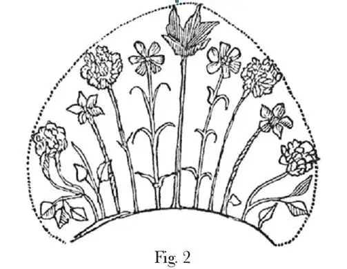
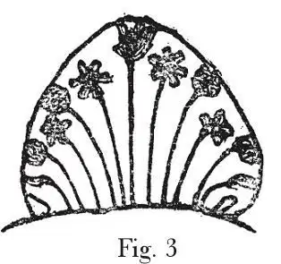
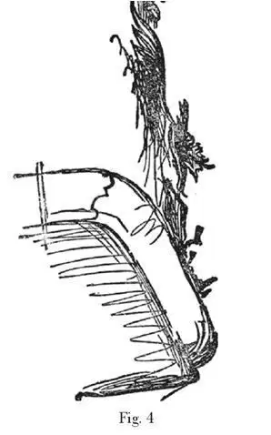
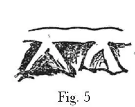
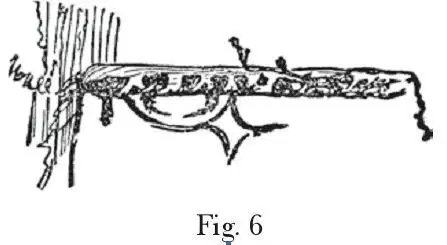
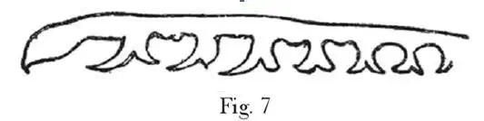

Appendix V
附录五
I can only give, to illustrate this balcony, fac-similes of rough memoranda made on a single leaf of my note-book, with a tired hand; but it may be useful to young students to see them, in order that they may know the difference between notes made to get at the gist and heart of a thing, and notes made merely to look neat. Only it must be observed that the best characters of free drawing are always lost even in the most careful fac-simile; and I should not show even these slight notes in wood-cut imitation, unless the reader had it in his power, by a glance at the 21st or 35th plates in Modern Painters, (and yet better, by trying to copy a piece of either of them,) to ascertain how far I can draw or not. I refer to these plates, because, though I distinctly stated in the preface that they, together with the 12th, 20th, 34th, and 37th, were executed on the steel by my own hand, (the use of the dry point in the foregrounds of the 12th and 21st plates being moreover wholly different from the common processes of etching,) I find it constantly assumed that they were engraved for me—as if direct lying in such matters were a thing of quite common usage.
关于这个阳台，我在笔记本上有几张备忘速写，因为当时两手已经很疲惫，图画得很粗糙，但是这图对低年级学生来说或许还有些用处，你们可以通过这张图片了解，为了把握事物核心内容而作的笔记和仅仅为了好看而作的笔记有什么区别。但是必须记住一点，即便再小心的摹写，也比不上自由绘画；要是读者自己看完《现代画家》中第21 号或第35 号画板的内容，能够判断我画得好还是不好（最好是，读者自己可以复制这两个作品），那么，我就可以给你们看我对这些木刻复制品的轻描淡写的笔记；否则，我想还是不给你们看为妙。之所以提起我的几块画板，是因为，尽管我曾在序言中说这两块连同第12 号、20 号、34 号、37 号画板都是我自己在钢板上完成的作品（在第12 号和第21 号画板的前景上完成的作品利用了铜版雕刻技术，与蚀刻画制作工艺完全不同，）还是不断有人说这是由别人代劳再送给我的作品，好像现在这种撒谎已是司空见惯、见怪不怪。
Fig. 2 is the centre-piece of the balcony, but a leaf-spray is omitted on the right-hand side, having been too much buried among the real leaves to be drawn. [Fig. 2]

图 2 是阳台的正面视图，右手边原本有一条带叶的树枝，因为被叶子包得严严实实的，没办法画进来。
Fig. 3 shows the intended general effect of its masses, the five-leaved and six-leaved flowers being clearly distinguishable at any distance. [Fig. 3]

图 3 是有意勾勒的整体效果图。五瓣花和六瓣花清晰可见，不论离得多远都能辨认出来。
Fig. 4 is its profile, rather carefully drawn at the top, to show the tulip and turk's cap lily leaves. Underneath there is a plate of iron beaten into broad thin leaves, which gives the centre of the balcony a gradual sweep outwards, like the side of a ship of war. The central profile is of the greatest importance in iron-work, as the flow of it affects the curves of the whole design, not merely in surface, as in marble carving, but in their intersections, when the side is seen through the front. The lighter leaves, bb, are real bindweed. [Fig. 4]

图 4 是侧视图，顶部是郁金香和头巾百合花瓣。下面是一个金属板，上有几片薄薄的铁制阔叶，在阳台中心形成向外曲线，形似战舰的侧面。中央的轮廓对整个铁制品来说最为重要，它的流面会影响整个设计的曲线，不仅仅像大理石雕刻那样只影响到表面，而且对交叉横断面影响很大。在交叉处，从正面就可以看见侧面的模样。这几片轻盈的花瓣bb 是真旋花。
Fig.5 shows two of the teeth of the border, illustrating their irregularity of form, which takes place quite to the extent indicated. [Fig. 5 ]
图 5 是边缘的两个齿状突出，形状不规则，大小与图示一致。
Fig.6 is the border at the side of the balcony, showing the most interesting circumstance in the treatment of the whole, namely, the enlargement and retraction of the teeth of the cornice, as it approaches the wall. This treatment of the whole cornice as a kind of wreath round the balcony, having its leaves flung loose at the back, and set close at the front, as a girl would throw a wreath of 1eaves round her hair, is precisely the most finished indication of a good workman's mind to be found in the whole thing. [Fig.6]


图 6 是阳台侧面边缘，是整个处理中最有趣的部分。它显示的是檐口向墙壁方向的齿状凸出物的扩大和收缩。经过处理，整个檐口像花圈一样缠绕阳台，花圈的花叶挂在阳台背上，离前端很近，就像一个小女孩把花冠戴绕在头发上那样。这是整个作品中最能表现艺匠用心的地方。
Fig.7 shows the outline of the retracted leaves accurately. [Fig.7]

图7精确地显示了收缩花叶的轮廓。
It was noted in the text that the whole of this ironwork had been coloured. The difficulty of colouring ironwork rightly, and the necessity of doing it in some way or other, have been the principal reasons for my never having entered heartily into this subject; for all the ironwork I have ever seen look beautiful was rusty, and rusty iron will not answer modern purposes. Nevertheless it may be painted; but it needs some one to do it who knows what painting means, and few of us do—certainly none, as yet, of our restorers of decoration or writers on colour.
我在文中曾指出这个铁制艺术品是彩色的。由于很难给铁制艺术品正确地上色，上色时又常常离不开这样或那样的工具，因此我从未热心地研究这一主题。我见过的所有外观优美的铁制艺术品都是生锈了的，而现代社会不需要生锈的铁制品。给铁制品上漆是没错，可是我们又很少有人真正懂得上漆，至少，就我们的装饰品收藏家和绘画评论家来说，还没人懂。
It is a marvellous thing to me that book after book should appear on this last subject, without apparently the slightest consciousness on the part of the writers that the first necessity of beauty in colour is gradation, as the first necessity of beauty in line is curvature,—or that the second necessity in colour is mystery or subtlety, as the second necessity in line is softness. Colour ungradated is wholly valueless; colour unmysterious is wholly barbarous. Unless it loses itself and melts away towards other colours, as a true line loses itself and melts away towards other lines, colour has no proper existence, in the noble sense of the word. What a cube, or tetrahedron, is to organic form, ungradated and unconfused colour is to organic colour; and a person who attempts to arrange colour harmonies without gradation of tint is in precisely the same category, as an artist who should try to compose a beautiful picture out of an accumulation of cubes and parallelopipeds.
我有些惊讶，不断出现一本又一本关于上述最后一个主题的书籍，却没有一本书的作者稍稍意识到色调美的第一要素是渐变，就像线条美的第一要素是曲率一样——或者色调美的第二因素是神秘或者说微妙，就像线条美的第二要素是柔和。未经渐变处理的色调毫无价值；缺乏神秘感的色调则是野蛮粗俗的。除非颜色从一种颜色融化变成其他颜色，就像线条由自身转向其他线条一样，不存在真正高贵的色调。未经渐变处理、未经混淆的颜色之于有机色调，正如立方体或四面体之于有机形体；不采用色彩渐变就渴望获得颜色和谐，其荒谬正如同艺术家试图通过堆积立方体和平行六面体创作优美的画作一样。
The value of hue in all illuminations on painted glass of fine periods depends primarily on the expedients used to make the colours palpitate and fluctuate; inequality of brilliancy being the condition of brilliancy, just as inequality of accent is the condition of power and loveliness in sound. The skill with which the thirteenth century illuminators in books, and the Indians in shawls and carpets, use the minutest atoms of colour to gradate other colours, and confuse the eye, is the first secret in their gift of splendour: associated, however, with so many other artifices which are quite instinctive and unteachable, that it is of little use to dwell upon them. Delicacy of organisation in the designer given, you will soon have all, and without it, nothing. However, not to close my book with desponding words, let me set down, as many of us like such things, five Laws to which there is no exception whatever, and which, if they can enable no one to produce good colour, are at least, as far as they reach, accurately condemnatory of bad colour.
所有黄金时期的彩色玻璃上的图案的颜色其价值主要取决于使得颜色获得跳动、起伏效果的技术。光彩的不均等是光彩的前提条件，就像声调的不均等是声音的力量和可爱之处一样。13世纪的插图画家，和印度的围巾和毛毯画家，他们都使用最小的颜色分子来处理其他颜色，混淆视觉，这是他们辉煌艺术成就的第一秘诀：他们还有其他很多本能的、无法传授的技艺，这是外人再努力也得不到的东西。只有具备设计者的微妙组织能力，你才可以做到，否则全都白搭。但是，在本书末尾，我并不想简单给出这样绝望的结论。像其他人一样，我还是想在这里给出 5 条法则。这是毫无例外的法则，这些法则即使没办法让人在使用色调方面变得更有能耐，至少可以帮助我们精确辨识什么是不好的色调。
1. ALL GOOD COLOUR IS GRADATED. A blush rose (or, better still, a blush itself, ) is the type of rightness in arrangement of pure hue.
1. 所有好色调都是渐变的。玫瑰的颜色（或者，脸红的颜色）就是好色调的一例。
2. ALL HARMONIES OF COLOUR DEPEND FOR THEIR VITALITY ON THE ACTION AND HELPFUL OPERATION OF EVERY PARTICLE OF COLOUR THEY CONTAIN.
2. 所有颜色的和谐离不开其中每种颜色分子的恰当运用和作用。
3. THE FINAL PARTICLES OF COLOUR NECESSARY TO THE COMPLETENESS OF A COLOUR HARMONY ARE ALWAYS INFINITELY SMALL; either laid by immeasurably subtle touches of the pencil, or produced by portions of the colouring substance, however distributed, which are so absolutely small as to become at the intended distance infinitely so to the eye.
3. 通常，实现色调和谐所需的决定性的颜色分子都是极其微小的。这些颜色要么通过铅笔无比微妙的笔触实现，要么通过色素染料完成，这些要素通常都极其微小，以至在预期距离内凭肉眼看都是无比微小的。
4. NO COLOUR HARMONY IS OF HIGH ORDER UNLESS IT INVOLVES INDESCRIBABLE TINTS. It is the best possible sign of a colour when nobody who sees it knows what to call it, or how to give an idea of it to any one else. Even among simple hues the most valuable are those which can not
4. 除非包含无法描述的色彩，任何色调的和谐都没有太大价值。那种让人看得见却叫不出名字或无法向别人描述的颜色是最高级别的颜色。即使在简单的颜色中间，最有价值的还是那些无法描述的色彩；最珍贵的紫色比纯紫色偏棕黄，比纯棕黄偏紫；最珍贵的绿色和纯绿色相比更像蓝色，和纯蓝色相比更像绿色。
5. THE FINER THE EYE FOR COLOUR, THE LESS IT WlLL REQUIRE TO GRATIFY IT INTENSELY. But that little must be supremely good and pure, as the finest notes of a great singer, which are so near to silence. And a great colourist will make even the absence of colour lovely, as the fading of the perfect voice makes silence sacred.
5. 眼睛对颜色的欣赏能力越高，越不需要强烈的色彩刺激来获得满足感。最好、最纯正的东西总是很稀少的，就像音乐里的“大音希声”。色调运用大师甚至能让色彩的缺席变得可爱，就像完美的声音的淡出让静默变得神圣。